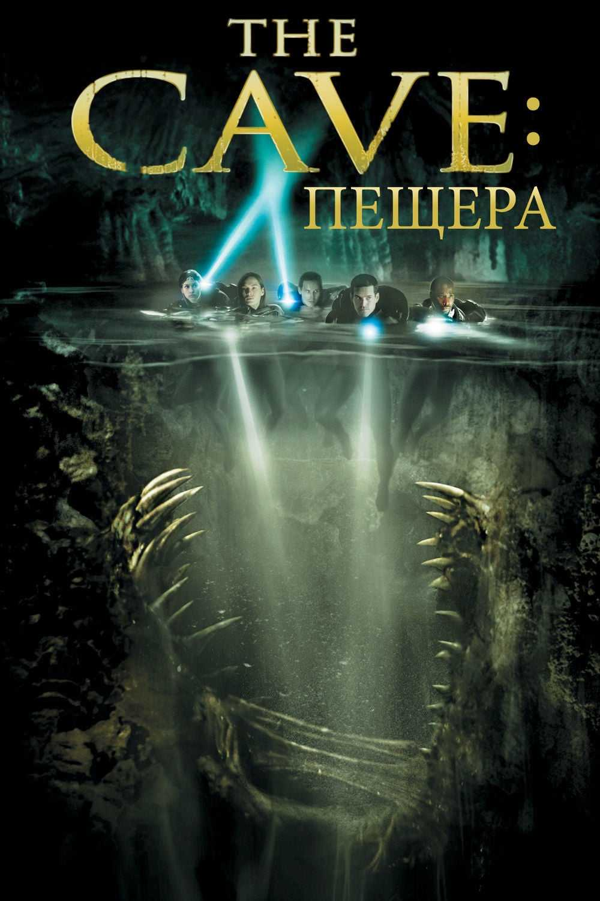

看电影一直是我的一个爱好。中学阶段喜欢好莱坞科幻片和各种异形的电影，依稀记得人生看的第一部电影叫《魔窟》，是一个探险的故事。几年后的某个暑假，以一天两三部的观影速度看了数不清的悬疑、惊悚、剧情、烧脑片。此后一直搜罗这些类型的电影，不乏很多重口味，一不小心也看过烂片。看到了好电影会特别关注导演，也因此喜欢上诺兰、大卫芬奇、库布里克、王家卫等人。后来观影口味变得更杂，不局限于某种类型或题材，会看小众的，冷门的，经典的，黑白的。电影之于我，就像阅读之于我，让我看到更多可能。以后也要一直看下去。
至于网页的内容，暂时想到两个。几个月前读了一本有关电影构图的书，觉得可以给观影提供一些新鲜视角，观众可以通过解读各种镜头揣摩其中深意，挖掘小线索，而不再是一昧被导演“操纵”。当然，也能借以一窥导演的美学风格。第二块我想选一小部分自己喜欢的电影，写一些短评。这部分非常主观，毕竟我也只是一千个哈姆雷特中的一个。